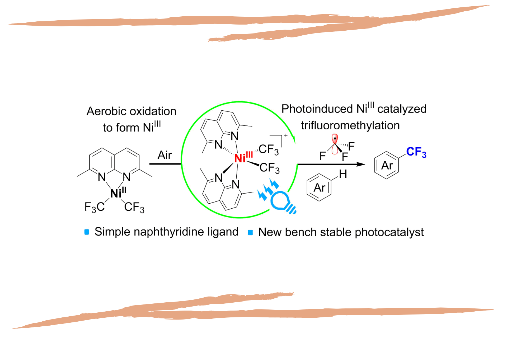

لا تعمل العلوم بمعزل عن بعضها
بالمعنى الأساسي والواسع للغاية
يتم تطبيق الفيزياء على الرياضيات ، والكيمياء هي الفيزياء التطبيقية ، والبيولوجيا هي الكيمياء التطبيقية
يبدو دائمًا أن أفضل الاكتشافات العلمية متعددة التخصصات. تعتمد العلوم الإنسانية والعلوم على بعضها البعض ، لذا فإن قطع التمويل الإنساني يضر بالموضوعات "الصعبة" أيضًا لا تُظهر الإصلاحات التعليمية في المملكة المتحدة ، بتركيزها النفعي على العلوم والهندسة ، أي فهم لما يجعل بيئة البحث العلمي جيدة. يخلق اجتماع العلوم التأملية والتجريبية ، بالإضافة إلى مجالات أخرى من العلوم الإنسانية مثل الأدب ، جوًا عامًا من الإبداع والتوتر الفكري والمشاركة المتبادلة. ربما يكون من المستحيل تحديد هذا الجو بأي مصطلحات محددة ، لكن معظم العلماء (بالمعنى الأوسع للكلمة) لديهم إحساس به ؛ إنه موجود في الثقافة العامة بقدر ما هو موجود في مجال معين من الحياة الأكاديمية
لا تعمل العلوم بمعزل عن بعضها البعض ، ولكنها تشارك دائمًا في عملية مستمرة من التلقيح المتبادل. لهذا السبب ، بعد عقود من التخصص المتزايد ، هناك تركيز متجدد على تعددية التخصصات. منذ بداياته ، كان التقدم في المسعى العلمي ككل يسير في كثير من الأحيان على هذا النحو. لا يحتاج المرء إلا إلى التفكير في ليوناردو أو لايبنيز أو جوته ليرى كيف أدى هذا التلقيح المتبادل ، حتى داخل عقل واحد ، إلى تحفيز الاكتشافات العظيمة. كما أوضح هؤلاء المفكرون ، فإن البحث في العلوم الإنسانية لا ينفصل عن العلوم الطبيعية ؛ إنه يعمل ببساطة في سجلات مختلفة.
على سبيل المثال ، قد تشرح العلوم الإنسانية الظواهر من حيث كيفية تجربتها بدلاً من المصطلحات التجريبية السببية. عند القيام بذلك ، يمكن أن تكون مجالات مثل الفلسفة وعلم النفس وحتى الأدب ، من الناحية النظرية ، متقدمة بخطوة على العلوم الطبيعية ، وخاصة في علم الإدراك وعلم الأعصاب ، وتلك المجالات المتعلقة بدراسة الحواس ؛ استنشاق القرائن والمسارات - مثل خنازير الكمأة العلمية - التي يمكن للعلوم الطبيعية متابعتها بتفسير سببي يمكن التحقق منه تجريبياً. هذه بالتأكيد ليست قيمتها الوحيدة ، ولكن لا ينبغي إغفال مساهمة العلوم الإنسانية في التطوير الشامل للعلوم. تُفهم الفلسفة ، على وجه الخصوص ، على أفضل وجه فيما يتعلق بالمشروع العظيم للعلم ككل: استكشاف العالم عن طريق العقلانية. إن التضحية بالعلوم الإنسانية على مذبح تقليص العجز ستكون ضربة لهذا المشروع وللمجتمع الذي بنينا عليه بشق الأنفس.
